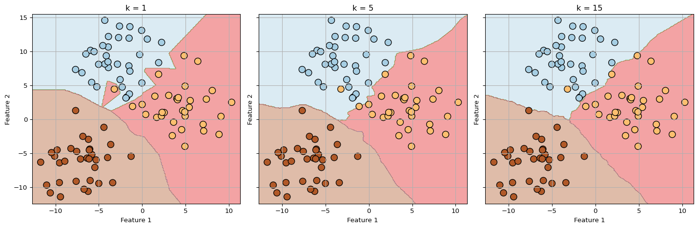
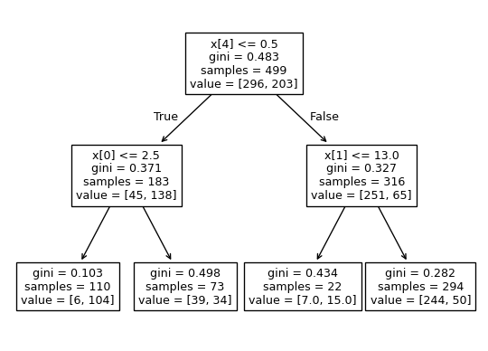

from sklearn.module import Model #import the type of algorithm
model = Model() #instantiate the model
model.fit(X, y) #X: predictor variables, y: target variable (from training data)
predictions = model.predict(X_new) #X_new: the new data(from test data)Machine Learning with Python
What is Machine Learning?
Machine learning(ML) is the process of computer learning the data to discover the relation of multiple variables and make decisions based on them. These decisions could either be prediction, classification, or clustering. Specifically, prediction and classification are grouped into supervised learning, and clustering is also named unsupervised learning.
| Supervised Learning | Unsupervised Learning | |
|---|---|---|
| Algorithm | Regression and Classification | Clustering, Association, and Anomaly Detection |
| Characteristics | - Correct answers are given to the computer - Diverse ways to test/score models |
- Answers not given to the computer - Limited ways to test/score models |
Supervised Learning
Supervised learning is classified as prediction or classification, according to whether the “target variable” is continuous or discrete. We aim to predict/classify the target variable’s value based on the values of “predictor variables”.
Example Workflow
Note that in the example workflow above, module, Model, X, y, model.predict, and X_new are values to be modified for actual use.
Classification
Classification is the process of predicting a label for the observation. Labels are discrete variable values that classifies each observation into different group. Specific algorithms include KNN, SVM, decision trees, and logistic regressions.
k-Nearest Neighbors(KNN)
k-Nearest Neighbors, more often called as KNN predicts the label by looking at the k closest labelled data points, and take the majority value of label as the observation’s label value.
The natural question following would be “How should I choose the right k?” A smaller k would mean that individual data gains more power in the classification, which would turn more complex models and overfitting. Likewise, if k is too large, it would give too simple models and cause underfitting. Hence, the question also faces the bias-variance tradeoff and researchers should be careful not to arrive at both extremes. For a theoretical background for KNN, please go to A.1.

Let’s begin practicing KNN with the following example workflow. In this workflow, we will use the titanic data from the seaborn package and predict whether a person survived or not with the predictor variables pclass, sex, age, sibsp, parch, and embarked. First, load the dataset.
import pandas as pd
import seaborn as sns
from sklearn.neighbors import KNeighborsClassifier
df = sns.load_dataset('titanic')
print(df.head()) survived pclass sex age sibsp parch fare embarked class \
0 0 3 male 22.0 1 0 7.2500 S Third
1 1 1 female 38.0 1 0 71.2833 C First
2 1 3 female 26.0 0 0 7.9250 S Third
3 1 1 female 35.0 1 0 53.1000 S First
4 0 3 male 35.0 0 0 8.0500 S Third
who adult_male deck embark_town alive alone
0 man True NaN Southampton no False
1 woman False C Cherbourg yes False
2 woman False NaN Southampton yes True
3 woman False C Southampton yes False
4 man True NaN Southampton no True (1) Getting Ready
Then, we choose the variables to use in the classification, drop or replace NA values, and further process the data to get things ready.
df = df[['survived', 'pclass', 'sex', 'age', 'sibsp', 'parch', 'embarked']]
# Dropping obs with NAs in age
df = df.dropna(subset = ['age'], axis = 0)
# Replacing obs with NAs in embarked with the mode value
temp = df['embarked'].value_counts(dropna= True).idxmax()
print(temp)
temp = df['embarked'].fillna(temp)
df['embarked'] = temp
print(df)S
survived pclass sex age sibsp parch embarked
0 0 3 male 22.0 1 0 S
1 1 1 female 38.0 1 0 C
2 1 3 female 26.0 0 0 S
3 1 1 female 35.0 1 0 S
4 0 3 male 35.0 0 0 S
.. ... ... ... ... ... ... ...
885 0 3 female 39.0 0 5 Q
886 0 2 male 27.0 0 0 S
887 1 1 female 19.0 0 0 S
889 1 1 male 26.0 0 0 C
890 0 3 male 32.0 0 0 Q
[714 rows x 7 columns]# Creating dummies for sex and embarked (one-hot-encoding)
onehot_sex = pd.get_dummies(df['sex'])
onehot_embarked = pd.get_dummies(df['embarked'], prefix = 'town')
df = pd.concat([df, onehot_sex], axis = 1)
df = pd.concat([df, onehot_embarked], axis = 1)
df = df.drop(['sex', 'embarked'], axis = 1)
X = df[['pclass', 'age', 'sibsp', 'parch', 'female', 'male', 'town_C', 'town_Q', 'town_S']]
y = df[['survived']]
print(df) survived pclass age sibsp parch female male town_C town_Q \
0 0 3 22.0 1 0 False True False False
1 1 1 38.0 1 0 True False True False
2 1 3 26.0 0 0 True False False False
3 1 1 35.0 1 0 True False False False
4 0 3 35.0 0 0 False True False False
.. ... ... ... ... ... ... ... ... ...
885 0 3 39.0 0 5 True False False True
886 0 2 27.0 0 0 False True False False
887 1 1 19.0 0 0 True False False False
889 1 1 26.0 0 0 False True True False
890 0 3 32.0 0 0 False True False True
town_S
0 True
1 False
2 True
3 True
4 True
.. ...
885 False
886 True
887 True
889 False
890 False
[714 rows x 10 columns](2) Normalization and Splitting data
One of the most important factors in distance-based algorithms(KNN, K-Means, etc.) and gradient-based algorithms(logistic regression, neural networks) is the normalization of predictor values. This is because input values with larger scales could have a larger effect on calculating the distance between observations. To eliminate such concern, normalization is necessary. In sci-kit learn, we do this with the preprocessing module.
from sklearn import preprocessing
print('Before:')
print(X)
X = preprocessing.StandardScaler().fit(X).transform(X)
print('After:')
print(pd.DataFrame(X))Before:
pclass age sibsp parch female male town_C town_Q town_S
0 3 22.0 1 0 False True False False True
1 1 38.0 1 0 True False True False False
2 3 26.0 0 0 True False False False True
3 1 35.0 1 0 True False False False True
4 3 35.0 0 0 False True False False True
.. ... ... ... ... ... ... ... ... ...
885 3 39.0 0 5 True False False True False
886 2 27.0 0 0 False True False False True
887 1 19.0 0 0 True False False False True
889 1 26.0 0 0 False True True False False
890 3 32.0 0 0 False True False True False
[714 rows x 9 columns]
After:
0 1 2 3 4 5 6 \
0 0.911232 -0.530377 0.524570 -0.505895 -0.759051 0.759051 -0.471808
1 -1.476364 0.571831 0.524570 -0.505895 1.317434 -1.317434 2.119506
2 0.911232 -0.254825 -0.551703 -0.505895 1.317434 -1.317434 -0.471808
3 -1.476364 0.365167 0.524570 -0.505895 1.317434 -1.317434 -0.471808
4 0.911232 0.365167 -0.551703 -0.505895 -0.759051 0.759051 -0.471808
.. ... ... ... ... ... ... ...
709 0.911232 0.640719 -0.551703 5.357890 1.317434 -1.317434 -0.471808
710 -0.282566 -0.185937 -0.551703 -0.505895 -0.759051 0.759051 -0.471808
711 -1.476364 -0.737041 -0.551703 -0.505895 1.317434 -1.317434 -0.471808
712 -1.476364 -0.254825 -0.551703 -0.505895 -0.759051 0.759051 2.119506
713 0.911232 0.158503 -0.551703 -0.505895 -0.759051 0.759051 -0.471808
7 8
0 -0.202031 0.533078
1 -0.202031 -1.875896
2 -0.202031 0.533078
3 -0.202031 0.533078
4 -0.202031 0.533078
.. ... ...
709 4.949747 -1.875896
710 -0.202031 0.533078
711 -0.202031 0.533078
712 -0.202031 -1.875896
713 4.949747 -1.875896
[714 rows x 9 columns]In the code above, preprocessing.StandardScaler() instantiates a scaling process, and the first method, fit(X), receives X and returns the sample mean and the sample variance of each column. Then, the second method, transform(X) returns the rescaled (transformed) X values according to the values from fit(X). We replace the original X with this new instantiation of the scaler.
Finally, the last stage of preprocessing data is to split the data into a training set and a test set. Here, we split them in a 7:3 ratio. Also, we often want the y values to occur symmetrically for the training and test sets. To do this, we add the optional argument stratify=y.
from sklearn.model_selection import train_test_split
X_train, X_test, y_train, y_test = train_test_split(X, y, test_size = 0.3, random_state = 10, stratify = y)(3) Training and Testing
from sklearn.neighbors import KNeighborsClassifier
# instantiating KNN
knn = KNeighborsClassifier(n_neighbors = 6)
# training the data
knn.fit(X_train, y_train)
# predicting(classifying)
y_predict = knn.predict(X_test)
print(y_predict[0:10])
print(y_test.values[0:10].flatten())[1 0 0 1 1 1 0 1 0 1]
[1 0 0 0 1 0 0 1 0 0](4) Model Performance
After train/test process is done, we summarize the model performance with confusion matrix and the classification report.
For detailed explanation of measuring model performances in supervised learning, go to Section 5.
from sklearn import metrics
# confusion matrix
knn_matrix = metrics.confusion_matrix(y_test, y_predict)
print('Confusion Matrix:')
print(knn_matrix)
# accuracy
knn_score = knn.score(X_test, y_test)
print('\nAccuracy:')
print(knn_score)
# classification report
class_report = metrics.classification_report(y_test, y_predict)
print('\nClassification Report:')
print(class_report)Confusion Matrix:
[[114 14]
[ 28 59]]
Accuracy:
0.8046511627906977
Classification Report:
precision recall f1-score support
0 0.80 0.89 0.84 128
1 0.81 0.68 0.74 87
accuracy 0.80 215
macro avg 0.81 0.78 0.79 215
weighted avg 0.81 0.80 0.80 215
To determine the best k value, we can loop through different values of k and plot the model complexity curve.
In Figure 1, we see that after k=15, the model suffers from underfitting. However, below k=5, we can also say that the model suffers from overfitting.
train_accuracies = {}
test_accuracies = {}
neighbors = np.arange(1,26)
for k in neighbors:
knn = KNeighborsClassifier(n_neighbors = k)
knn.fit(X_train, y_train)
train_accuracies[k] = knn.score(X_train, y_train)
test_accuracies[k] = knn.score(X_test, y_test)
plt.figure(figsize = (7, 5))
plt.title('KNN Accuracy Plot')
plt.plot(neighbors, train_accuracies.values(), label = 'Training Accuracy')
plt.plot(neighbors, test_accuracies.values(), label = 'Test Accuracy')
plt.legend()
plt.xlabel("Number of Neighbors")
plt.ylabel("Accuracy")
plt.show()Tree-based Models(Decision Tree and Random Forests)
Decision Trees
Trees are methods applicable to both classification and prediction problems. In such sense, they’re often called CART(Classification and Regression Tree). Here, we focus on decision trees, which classify the labels of data. Decision trees are based on a mechanism often called recursive partitioning. For details of recursive partitioning, please check A.2.
Let’s begin with the following example workflow. In this workflow, we will use the titanic data from the seaborn package and predict whether a person survived or not with the predictor variables pclass, sex, age, sibsp, parch, and embarked. First, load the required packages and the dataset. The module for decision trees in scikit-learn is the DecisionTreeClassifier module in the sklearn.tree package.
(1) Getting Ready
import pandas as pd
import seaborn as sns
from sklearn.tree import DecisionTreeClassifier
df = sns.load_dataset('titanic')
df = df[['survived', 'pclass', 'sex', 'age', 'sibsp', 'parch', 'embarked']]
# Dropping obs with NAs in age
df = df.dropna(subset = ['age'], axis = 0)
# Replacing obs with NAs in embarked with the mode value
temp = df['embarked'].value_counts(dropna= True).idxmax()
print(temp)
temp = df['embarked'].fillna(temp)
df['embarked'] = temp
print(df)S
survived pclass sex age sibsp parch embarked
0 0 3 male 22.0 1 0 S
1 1 1 female 38.0 1 0 C
2 1 3 female 26.0 0 0 S
3 1 1 female 35.0 1 0 S
4 0 3 male 35.0 0 0 S
.. ... ... ... ... ... ... ...
885 0 3 female 39.0 0 5 Q
886 0 2 male 27.0 0 0 S
887 1 1 female 19.0 0 0 S
889 1 1 male 26.0 0 0 C
890 0 3 male 32.0 0 0 Q
[714 rows x 7 columns]In contrast to KNeighborsClassifier, DecisionTreeClassifier does not require one-hot encoding and standardizing. However, it does require each string variable to be converted to integers using label encoding.
from sklearn.preprocessing import LabelEncoder
# Automatically encode all object (categorical) columns
categorical_columns = df.select_dtypes(include=['object']).columns
label_encoders = {}
for column in categorical_columns:
le = LabelEncoder()
df[column] = le.fit_transform(df[column])
label_encoders[column] = le
print(df)
# You can check, for example, how the variable sex is encoded with the .classes_ method of label_encoders['sex'] object
print(label_encoders['sex'].classes_) # female: 0, male: 1 survived pclass sex age sibsp parch embarked
0 0 3 1 22.0 1 0 2
1 1 1 0 38.0 1 0 0
2 1 3 0 26.0 0 0 2
3 1 1 0 35.0 1 0 2
4 0 3 1 35.0 0 0 2
.. ... ... ... ... ... ... ...
885 0 3 0 39.0 0 5 1
886 0 2 1 27.0 0 0 2
887 1 1 0 19.0 0 0 2
889 1 1 1 26.0 0 0 0
890 0 3 1 32.0 0 0 1
[714 rows x 7 columns]
['female' 'male'](2) Training and Testing
Next, we split the data into a training set and a test set. After that we instantiate a DecisionTreeClassifier object, setting the maximum depth of a tree, max_depth to 2. random_state controls - sets the seed - any randomness that could happen in the decision-making process. Such randomness can happen when handling ties of multiple features, or when feature selection or bootstrap sampling is employed(We’ll discuss this later).
from sklearn.model_selection import train_test_split
from sklearn.tree import plot_tree
X = df[['pclass', 'age', 'sibsp', 'parch', 'sex', 'embarked']]
y = df[['survived']]
X_train, X_test, y_train, y_test = train_test_split(X, y, test_size = 0.3, random_state = 10, stratify = y)
# Instantiate decision_tree
decision_tree = DecisionTreeClassifier(max_depth=2, random_state=1)
# Fit decision_tree to the training data
decision_tree.fit(X_train, y_train)
# Plot the tree
plot_tree(decision_tree.fit(X_train, y_train))
plt.show()
TBU
Logistic Regressions
Logistic regressions are useful for classifying binary labels. We will do this with the same dataset, titanic, and classify whether passengers survived or not. The following code repeats the data preprocessing, normalization, and splitting process we had in the former examples.
import pandas as pd
import seaborn as sns
from sklearn import preprocessing
from sklearn.model_selection import train_test_split
df = sns.load_dataset('titanic')
df = df[['survived', 'pclass', 'sex', 'age', 'sibsp', 'parch', 'embarked']]
# Dropping obs with NAs in age
df = df.dropna(subset = ['age'], axis = 0)
# Replacing obs with NAs in embarked with the mode value
temp = df['embarked'].value_counts(dropna= True).idxmax()
temp = df['embarked'].fillna(temp)
df['embarked'] = temp
onehot_sex = pd.get_dummies(df['sex'])
onehot_embarked = pd.get_dummies(df['embarked'], prefix = 'town')
df = pd.concat([df, onehot_sex], axis = 1)
df = pd.concat([df, onehot_embarked], axis = 1)
df = df.drop(['sex', 'embarked'], axis = 1)
X = df[['pclass', 'age', 'sibsp', 'parch', 'female', 'male', 'town_C', 'town_Q', 'town_S']]
y = df[['survived']]
X = preprocessing.StandardScaler().fit(X).transform(X)
X_train, X_test, y_train, y_test = train_test_split(X, y, test_size = 0.3, random_state = 10, stratify = y)(1) Training and Testing
Next, we instantiate a LogisticRegression() object and train it with the data. The .predict(X_test) method returns the predicted class of the test data, and .predict_proba(X_test) returns the predicted probability of each class.
.predict(X_test): predicted class.predict_proba(X_test): predicted probability of each class(the probability threshold is 0.5).predict_log_proba(X_test): predicted log-probability of each class
from sklearn.linear_model import LogisticRegression
logreg = LogisticRegression()
logreg.fit(X_train, y_train)
y_pred = logreg.predict(X_test)
y_pred_probs = logreg.predict_proba(X_test)[:, 1](2) ROC- AUC
By default, probability threshold for logistic regressions in scikit-learn is 0.5. However, the right threshold could vary across cases. Thus, to obtain the right threshold, we could plot \(1-\mathrm{specificity}\) (on the X-axis) and \(\mathrm{sensitivity}\) (on the Y-axis), which is called the ROC curve(Receiver Operating Characteristics).
import matplotlib.pyplot as plt
from sklearn.metrics import roc_curve
one_m_spec, sens, thresholds = roc_curve(y_test, y_pred_probs)
plt.plot([0,1], [0,1], 'k--')
plt.plot(one_m_spec, sens)
plt.xlabel("False Positive Rate(1-Spec)")
plt.ylabel("True Positive Rate(Sens)")
plt.title("Logistic Regression ROC Curve")
plt.show()ROC curve illustrates how the model performs on the test data. The more the shape of ROC curve looks like \(\Gamma\), the better. - we can find a threshold that attains larger sensitivity and specificity - Area under the curve, AUC, is the summarized value of such model performance. Its value range between 0 and 1, with 1 being ideal.
from sklearn.metrics import roc_auc_score
print(roc_auc_score(y_test, y_pred_probs))0.836206896551724Predictions
Prediction is simply running regressions and using the fitted values as the predicted values of outcome. The process of such practice is not much different from classifications. Let’s begin by loading the data.
import seaborn as sns
import pandas as pd
df = sns.load_dataset('penguins')
df.head()| species | island | bill_length_mm | bill_depth_mm | flipper_length_mm | body_mass_g | sex | |
|---|---|---|---|---|---|---|---|
| 0 | Adelie | Torgersen | 39.1 | 18.7 | 181.0 | 3750.0 | Male |
| 1 | Adelie | Torgersen | 39.5 | 17.4 | 186.0 | 3800.0 | Female |
| 2 | Adelie | Torgersen | 40.3 | 18.0 | 195.0 | 3250.0 | Female |
| 3 | Adelie | Torgersen | NaN | NaN | NaN | NaN | NaN |
| 4 | Adelie | Torgersen | 36.7 | 19.3 | 193.0 | 3450.0 | Female |
With the penguins data from the seaborn package, we’d like to predict each penguin’s body_mass_g based on its species, bill_length_mm, bill_depth_mm, flipper_length_mm, and sex.
df = df.dropna(subset = ['sex', 'body_mass_g'], how = 'any', axis = 0)
onehot_sex = pd.get_dummies(df['sex'])
onehot_species = pd.get_dummies(df['species'], prefix = 'species')
df = pd.concat([df, onehot_sex], axis = 1)
df = pd.concat([df, onehot_species], axis = 1)
df = df.drop(['sex', 'species'], axis = 1)
X = df.drop('body_mass_g', axis = 1).values
y = df[['body_mass_g']]
print(df) island bill_length_mm bill_depth_mm flipper_length_mm body_mass_g \
0 Torgersen 39.1 18.7 181.0 3750.0
1 Torgersen 39.5 17.4 186.0 3800.0
2 Torgersen 40.3 18.0 195.0 3250.0
4 Torgersen 36.7 19.3 193.0 3450.0
5 Torgersen 39.3 20.6 190.0 3650.0
.. ... ... ... ... ...
338 Biscoe 47.2 13.7 214.0 4925.0
340 Biscoe 46.8 14.3 215.0 4850.0
341 Biscoe 50.4 15.7 222.0 5750.0
342 Biscoe 45.2 14.8 212.0 5200.0
343 Biscoe 49.9 16.1 213.0 5400.0
Female Male species_Adelie species_Chinstrap species_Gentoo
0 False True True False False
1 True False True False False
2 True False True False False
4 True False True False False
5 False True True False False
.. ... ... ... ... ...
338 True False False False True
340 True False False False True
341 False True False False True
342 True False False False True
343 False True False False True
[333 rows x 10 columns]Univariate Regression
A univariate regression, or more specifically a simple linear regression, regresses y on a single predictor variable x. Let’s consider a simple case of regressing body_mass_g on flipper_length_mm.
import matplotlib.pyplot as plt
fig = plt.figure(figsize = (9,5))
ax1 = fig.add_subplot(1,2,1)
ax2 = fig.add_subplot(1,2,2)
df.plot(kind='scatter', x='flipper_length_mm', y='body_mass_g', c='coral', ax=ax1)
sns.regplot(x='flipper_length_mm', y='body_mass_g', data=df, scatter_kws={"alpha": 0.5}, ax=ax2)
plt.show()In the code below, we will split the data into training set and test set(7:3), calculate the model performance with R-squared in the test set, and print out the linear coefficients.
from sklearn.model_selection import train_test_split
from sklearn.linear_model import LinearRegression
x = df[['flipper_length_mm']]
y = df[['body_mass_g']]
# split the data
x_train, x_test, y_train, y_test = train_test_split(x, y, test_size = 0.3, random_state = 10)
# instantiate linear regression
reg = LinearRegression()
# train the data
reg.fit(x_train, y_train)
# calculate R-squared
r_square = reg.score(x_test, y_test)
print('R-squared: ', r_square)
# print the slope and the intercept
print('slope: ', reg.coef_)
print('intercept: ', reg.intercept_)R-squared: 0.6908213440414697
slope: [[50.50455071]]
intercept: [-5947.85540739]Multinomial Regression with PolynomialFeatures
Following the codes in Section 4.1, we will introduce a quadratic and a cubic term of X to the regression.
from sklearn.preprocessing import PolynomialFeatures
x = df[['flipper_length_mm']]
y = df[['body_mass_g']]
# split the data
x_train, x_test, y_train, y_test = train_test_split(x, y, test_size = 0.3, random_state = 10)
# adding polynomials
poly = PolynomialFeatures(degree = 3)
x_train_poly = poly.fit_transform(x_train)
x_test_poly = poly.fit_transform(x_test)
print('x_train shape: ', x_train.shape)
print('x_train_poly shape: ', x_train_poly.shape)
# instantiate linear regression
reg = LinearRegression()
# train the data
reg.fit(x_train_poly, y_train)
# calculate R-squared
r_square = reg.score(x_test_poly, y_test)
print('R-squared: ', r_square)
# print the slope and the intercept
print('slope: ', reg.coef_)
print('intercept: ', reg.intercept_)x_train shape: (233, 1)
x_train_poly shape: (233, 4)
R-squared: 0.7277186999187835
slope: [[ 0.00000000e+00 -2.19281026e+03 1.06376941e+01 -1.67427890e-02]]
intercept: [151056.40370382]Multivariate Regressions
X = df.drop(['body_mass_g', 'island', 'Male', 'species_Gentoo'], axis = 1)
y = df[['body_mass_g']]
# split the data
X_train, X_test, y_train, y_test = train_test_split(X, y, test_size = 0.3, random_state = 10)
# instantiate linear regression
reg = LinearRegression()
# train the data
reg.fit(X_train, y_train)
# calculate R-squared
r_square = reg.score(X_test, y_test)
print('R-squared: ', r_square)
# print the slope and the intercept
print('covariates: ', list(X_test.columns))
print('slope: ', reg.coef_)
print('intercept: ', reg.intercept_)R-squared: 0.8480141789076938
covariates: ['bill_length_mm', 'bill_depth_mm', 'flipper_length_mm', 'Female', 'species_Adelie', 'species_Chinstrap']
slope: [[ 12.26524581 77.29979709 18.82252667 -366.33908719
-1022.18520551 -1190.49839881]]
intercept: [-574.49999499]Penalized Regressions
Penalized regressions, or regularized regressions, are regressions with loss functions modified to reduce the possibility of overfitting. Usually, large coefficients lead to overfitting. Thus, penalized regressions such as ridge regressions and LASSO(Least Absolute Shrinkage and Selection Operator) penalizes large sized coefficients, by including the size of coefficients into the loss function.
- Note that since the size of coefficients could differ across measure units of variables, standardization before regression is indispensable!!!
- Also, the coefficient for the intercept(\(\beta_0\)) is not included into the penalty term.
(1) Ridge Regressions
- Loss Function = \(\mathrm{MSE} + \alpha\times\sum_{i=1}^k\beta_i^2\)
- Here, \(\alpha\) is called a hyperparameter, a parameter that we choose to optimize the prediction.
- In the case of \(\alpha = 0\), ridge regrerssions would be equivalent to OLS.
from sklearn.linear_model import Ridge
# scores = [] #initiate an empty list to record R-squared
# for alpha in range(-1, 4):
# ridge = Ridge(alpha = 10**alpha)
# ridge.fit(X_train, y_train)
# y_pred = ridge.predict(X_test)
# scores.append(ridge.score(X_test, y_test))
#
# print(scores)(2) LASSOs
- Loss Function = \(\mathrm{MSE} + \alpha\times\sum_{i=1}^k|\beta_i|\)
- Here, \(\alpha\) is called a hyperparameter, a parameter that we choose to optimize the prediction.
- In the case of \(\alpha = 0\), LASSO would be equivalent to OLS.
- LASSO shrinks the coefficients of less important features to zero
# from sklearn.linear_model import Lasso
#
# lasso = Lasso(alpha=0.1)
# lasso_coef = lasso.fit(X, y).coef_Methods of Measuring Model Performance
Model performance is primarily assessed with the test set.
| Objective | Classification | Prediction |
|---|---|---|
| Related Indices | - Accuracy - Sensitivity(TP) - Specificity(TN) |
- R-squared - MSE |
| Related Figures/Tables | Confusion Matrix |
Confusion Matrix
| Actual Value | ||||
|---|---|---|---|---|
| T | F | |||
| Predicted Value | T | TP | FP | |
| F | FN | TN | ||
Accuracy
\[ \frac{\text{correct predictions}}{\text{total observations}} = \frac{\text{TP} + \text{TN}}{\text{TP} + \text{TN} + \text{FP} + \text{FN}}\]
Sensitivity and Specificity
\[ \mathrm{Sensitivity(=Recall)} = \frac{\text{TP}}{\text{TP} +\text{FN}}\]
\[ \mathrm{Specificity} = \frac{\text{TN}}{\text{TN} +\text{FP}}\]
Precision and Negative Predictive
\[ \mathrm{Precision} = \frac{\text{TP}}{\text{TP} +\text{FP}}\] \[ \mathrm{NPV} = \frac{\text{TN}}{\text{TN} +\text{FN}}\]
F1 Score
\[\mathrm{F1} = 2\cdot\frac{\mathrm{Precision}\cdot\mathrm{Recall}}{\mathrm{Precision} + \mathrm{Recall}}\]
R-Squared and MSE
R-squared and mean squared error(MSE) are often reported as parts of linear regressions results. To understand the concept, we must understand the concept of loss function in regression.
Loss function represents the amount of information loss incurred by using the predicted values rather than actual target values. The most common loss function is the mean squared error function(a.k.a. quadratic loss function), which is equal to the residual sum of squares divided by the number of observations.
\[ MSE = \frac{1}{n}\sum_{i=1}^n(y_i-\hat{y}_i)^2 \] \[ RSS = \sum_{i=1}^n(y_i-\hat{y}_i)^2 \]
mean_squared_error function from sklearn.metrics calculates the MSE of a given model.
from sklearn.metrics import mean_squared_error
mean_squared_error(y_test, y_pred)R-squared(\(R^2\)) quantifies the portion explained by the predictor variables of the variance of the target variable. The value ranges from 0 to 1, and a higher value implies that the predictor variables explain the target well.
\[ R^2 = 1-\frac{RSS}{TSS}\] \[ TSS = \sum_{i=1}^n(y_i-\bar{y})^2\]
It is calculated by the score method of a regression object.
from sklearn.linear_model import LinearRegression
r_square = reg.score(X, y)Cross Validation and Hyperparameter Tuning
Cross validating means dividing the sample into \(k\) folds, and rotate the role of test data. In each of these splits and the corresponding test-fold, we obtain \(k\) model performance metrics. Through cross validation, we can check whether these \(k\) metrics are similar or having peculiarities, helping us generalize the model performance to unseen data.
from sklearn.model_selection import cross_val_score, KFold
kf = KFold(n_splits = 5, shuffle = True, random_state = 42) # "shuffle = True" shuffles the data before splitting the data
reg = LinearRegression() # instantiation of the model selected
cv_results = cross_val_score(reg, X, y, cv = kf)Most ML methods require the researcher to set parameters that shape the learning process, and these parameters are called hyperparameters. Examples include number of neighbors in KNN, alpha in ridge and LASSO, and probability threshold in logistic regressions. Some hyperparameters display stronger predictive power than others in the test data. However, choosing hyperparameter based on the result from a single test set leads to an overfitting to the test set. Thus, it is essential to use cross-validation for hyperparameter tuning.
Why cross-validation for hyperparameter tuning?
We have two kinds of parameters: (1) model parameters, which we estimate with the train data, and (2) hyperparameters which shapes the model.
Model parameters are estimated based on the training set, given a specific value of hyperparameters. Thus, we can’t obtain model parameter estimates and tune hyperparameters simultaneously in the training set, because the model parameter estimates are dependent on the hyperparameter value.
For example, in LASSO,
\[ \hat{\mathbf{\beta}} = \mathrm{arg}\min_\beta MSE(\beta; \xi^{tr})+\alpha\cdot||\beta|| \tag{1}\]
Here \(\xi^{tr}\) denotes the training data. \(\alpha\) and \(\beta\) denote the hyperparameter and the regression coefficients, respectively. Inspecting the definition, one can say \(\hat{\beta} = \hat{\beta}(\alpha, \xi^{tr})\).
If \(\alpha\) is also determined by the training set, \(\hat{\beta}\) reduces into \(\hat{\beta}(\alpha(\xi^{tr}), \xi^{tr}) = \hat{\beta}(\xi^{tr})\). (i.e., The parameters are entirely a function of the training set). Note that in the context of LASSO, this results the same coefficients to OLS as \(\alpha\) would reduce to 0.
Then, should we select hyperparameters based on test set(i.e., given a set of possible candidates, should we select one that best performs in the test set)? Such hyperparameters would overfit the model to the test set; we want our hyperparameters to work well with unseen and new data.
In the former example with LASSO,
\[ \hat{\mathbf{\beta}_\alpha}(\xi^{tr}) = \mathrm{arg}\min_\beta MSE(\beta; \xi^{tr})+\alpha\cdot||\beta|| \]
is a function of \(\xi^{tr}\) and \(\alpha\). In contrast to Equation 1, I added the subscript \(\alpha\), because this is not our final choice of \(\hat{\beta}\); rather, it is the interim value of \(\hat{\beta}\) given a specific value of \(\alpha\). The final choice of \(\hat{\beta}\) would be among \(\{\hat{\beta_\alpha}: \alpha \in I_\alpha\}\), whee \(I_\alpha\) denotes the set of all \(\alpha\)’s in consideration.
Let \(\xi^{te}\) denote the test set. Comparing all the \[ \hat{\alpha} = \mathrm{arg}\min_{\alpha\in I_\alpha} MSE(\hat{\beta_\alpha}(\xi^{tr}); \xi^{te})+\alpha\cdot||\hat{\beta_\alpha}|| \]
The resulting best \(\hat{\alpha}\) is the function of \(\xi^{tr}, \xi^{te}\), and \(I_\alpha\), and our choice of \(\hat{\beta}\) would be \(\hat{\beta_\hat{\alpha}}\).
This leads to overfitting the model to the test set, because the test set determines both \(\hat{\alpha}\) and \(\hat{\beta}\).
Now, consider k-fold cross validation. All splits assign the role of a test set to different folds. Let \(S_i(i=1,2,...,k)\) denote the split where the \(i\)-th fold takes the role of a test set. Let \(\xi^i\) and \(\xi^{-i}\) denote the test fold and training folds of the split, \(S_i\). Just for clarity, I want to add one more notation, \(\Xi(k)\), which denotes the splitting scheme. Note that although the number \(k\) is determined by the researcher, the splitting scheme \(\Xi(k)\) is determined randomly.
Suppose now, we want to minimize the MSE from all the \(k\) folds with respect to \(\alpha\).
\[ \hat{\alpha} = \mathrm{arg}\min_{\alpha\in I_\alpha} \sum_{i=1}^k\left(MSE(\hat{\beta_\alpha}(\xi^{-i}); \xi^{i})+\alpha\cdot||\hat{\beta_\alpha}||\right) \] Then, \(\hat{\alpha}\) is a function of \(I_\alpha\), \(\Xi(k)\) and \(k\). Now, although \(\hat{\alpha}\) and the corresponding \(\hat{\beta}_\hat{\alpha}\) are determined to fit the sample data well, they do not fit the model to a specific subset of the sample data. Instead, roughly speaking, they fit it to the splitting scheme \(\Xi(k)\), which is determined randomly. This is why cross validations are often necessary for comparing different models and hyperparameters.
Grid Search cross-validation
GridSearchCV method from the sklearn.model_selection module creates a grid of possible hyperparameter values. In detail, there could be more than one hyperparameters for a prediction model. - You can choose both the number of neighbors and a metric(Euclidean or L1) in the case of KNN. - GridSearchCV searches through all the user-suggested values of those user-chosen set of hyperparameters.
from sklearn.model_selection import KFold, GridSearchCV
kf = KFold(n_splits = 5, shuffle = True, random_state = 42)
param_grid = {'n_neighbors': range(2,20,2), 'metric': ["minkowski", "cityblock"]} # Note: Minkowski metric is virtually Euclidean in our case.
knn = KNeighborsClassifier()
knn_cv = GridSearchCV(knn, param_grid, cv = kf)
knn_cv.fit(X_train, y_train)
print(knn_cv.best_params_, knn_cv.best_score_){'metric': 'minkowski', 'n_neighbors': 4} 0.7916363636363637Randomized Search cross-validation
GridSearchCV is indeed a very complete way for searching the best set of parameters, given a user-defined range to search for. However, this often results in unnecessarily many trials. That is, GridSearchCV goes through the combination of all the folds and the possible parameters values, and that is way too much sometimes. RandomizedSearchCV goes through a random set of parameter values, rather than exhausting all the candidates. RandomizedSearchCV requires one more argument than GridSearchCV: n_iter. n_iter is the number of possible hyperparameter sets to be tested. More n_iter leads to a finer quality at the cost of runtime.
from sklearn.model_selection import KFold, RandomizedSearchCV
kf = KFold(n_splits = 5, shuffle = True, random_state = 42)
param_grid = {'n_neighbors': range(2,20,2), 'metric': ["minkowski", "cityblock"]}
knn = KNeighborsClassifier()
knn_cv = RandomizedSearchCV(knn, param_grid, cv = kf, n_iter=20)
knn_cv.fit(X_train, y_train)
print(knn_cv.best_params_, knn_cv.best_score_){'n_neighbors': 4, 'metric': 'minkowski'} 0.7916363636363637Pipeline Operators
TBU
scikit-learn Cheatsheets
TBU
Handling Missing Data
from sklearn.impute import SimpleImputer
# imputation with sample mean
imp_mean = SimpleImputer()
X_train = imp_mode.transform(X_train)
# imputation with mode
imp_mode = SimpleImputer(strategy="most_frequent")
X_train = imp_mode.transform(X_train)Appendix
TBU
A.1. KNN Algorithm
TBU
A.2. Recursive Partitioning
In this section, I elaborate on how the tree-based models split the covariate space recursively. At each node(except for the terminal node), a tree first chooses one covariate and the cutoff that would most help the children nodes predict the outcome variable. This is the concept of recursive partitioning. At each node, the model recursively selects a covariate(i.e., feature) and a cutoff(i.e., split-point) to explain the outcome’s variance(or heterogeneity). However, the measure of how well the outcome heterogeneity is explained depends on whether the outcome is continuous or categorical. That is,
| Tree Type | Target Variable | Split Criterion |
|---|---|---|
| Regression Trees | Continuous | minimize RSS, MSE |
| Classification Trees | Categorical | maximize IG |
For regression trees, the aim of recursive partitioning is to choose a covariate and a split-point that would minimize the RSS(residual sum of squares). In other words, we minimize
\[ \sum_{i: x_i \in L(j,s)}(y_i-\overline{y}_L)^2 + \sum_{i: x_i \in R(j,s)}(y_i-\overline{y}_R)^2 \]
where
\[ L(j,s) = \{X|X_j < s\} \\ R(j,s) = \{X|X_j \geq s\} \] and \(\overline{y}_L, \overline{y}_R\) denote the mean outcome for the training observations in each region.
For classification trees, the partitioning aims to maximize the information gain(IG) from the split:
\[ IG(f, s) = Imp(parent) - \left(\frac{N_{L}}{N}Imp(L) +\frac{N_{R}}{N}Imp(R) \right) \] where
- \(IG\) : information gain
- \(Imp\) : impurity index
- \(N, N_{L}, N_{R}\) : Number of obs. in the parent ntode, left child node, right child node
Here, \(Imp()\) stands for the impurity of a specific node, and thus information gain represents the purity gained from splitting the node into two. Intuitively, we can think of the impurity as a measure of how mixed the labels(i.e., outcome variables) are at a certain node. Thus, a property that the impurity measure should have is to have a low value when the node fully consists of one label value, and have a high value if the node consists of multiple label values.
There are multiple ways to measure the impurity:
- Gini Index: \(G(m) = \sum_{k=1}^K \overline{p}_{mk}(1-\overline{p}_{mk})\)
- Entropy: \(D(m)= -\sum_{k=1}^K\overline{p}_{mk}\log \overline{p}_{mk}\)
where \(m\) denotes the node.
At a glance, you can see that both gini and entropy goes to zero when each \(\overline{p}_{mk}\) goes close to either zero or one. Note that \(\sum_{k=1}^K\overline{p}_{mk}=1\), and solving the “maximization” under linear constraints would demonstrate that \(\overline{p}_{mk}=\frac{1}{K}\) mazimizes the impurity for both measures. These two measures are widely used in the context of ML, so it is good to know before we start making our trees and forests:)
Some Remarks for Econ Students
Notice that in the gini index, since \(\sum_{k=1}^K\overline{p}_{mk}=1\),
\[ G(m) = \sum_{k=1}^K \overline{p}_{mk}(1-\overline{p}_{mk})=1-\sum_{k=1}^K\overline{p}_{mk}^2 \] which very much resembles the Herfindahl-Hirschman Index (HHI) in Industrial Organzation(an index for measuring the concentration of market share). Obviously, different disciplines sometimes rely on similar approaches.
A.3. LASSO vs OLS
LASSO shrinks the number of predictor variables used to explain the target. But after removing the bad predictors, wouldn’t OLS with the remaining features be a better prediction than LASSO estimates?
The answer is no. LASSO reduces the variance of the model at the cost of the model’s bias, whereas OLS, even with only the remaining features,increases variance and reduces bias.
import numpy as np
from sklearn.linear_model import LassoCV, LinearRegression
from sklearn.model_selection import train_test_split
from sklearn.metrics import mean_squared_error
# A simulation with higher dimensionality (p > n) and multiple runs
n_samples, n_features = 50, 200 # Higher dimensionality (p > n)
n_simulations = 100 # Number of simulations
mse_lasso_list = []
mse_ols_list = []
for _ in range(n_simulations):
X = np.random.randn(n_samples, n_features)
true_coef = np.zeros(n_features)
true_coef[:10] = np.random.uniform(5, 10, size=10) # Sparse true coefficients
y = X @ true_coef + np.random.randn(n_samples) * 5
X_train, X_test, y_train, y_test = train_test_split(X, y, test_size=0.3, random_state=None)
lasso = LassoCV(cv=5).fit(X_train, y_train)
selected_features = np.where(lasso.coef_ != 0)[0]
ols = LinearRegression()
if len(selected_features) > 0:
ols.fit(X_train[:, selected_features], y_train)
y_pred_ols = ols.predict(X_test[:, selected_features])
mse_ols_list.append(mean_squared_error(y_test, y_pred_ols))
else:
mse_ols_list.append(np.nan) # Handle case where LASSO selects no features
y_pred_lasso = lasso.predict(X_test)
mse_lasso_list.append(mean_squared_error(y_test, y_pred_lasso))
mean_mse_lasso = np.nanmean(mse_lasso_list)
mean_mse_ols = np.nanmean(mse_ols_list)
print('Average MSE of LASSO: ', mean_mse_lasso)
print('Average MSE of OLS: ', mean_mse_ols)Average MSE of LASSO: 445.7394808331279
Average MSE of OLS: 483.51659229493794References
- (KOR) Seunghwan Oh(?��?ȯ). (2019). Python Machine Learning Pandas Data Analysis(???̽? ?ӽŷ??? ?Ǵٽ? ?????ͺм?). ��????ȭ??
- James, G., Witten, D., Hastie, T., & Tibshirani, R. (2013). An introduction to statistical learning (1st ed.) [PDF]. Springer.